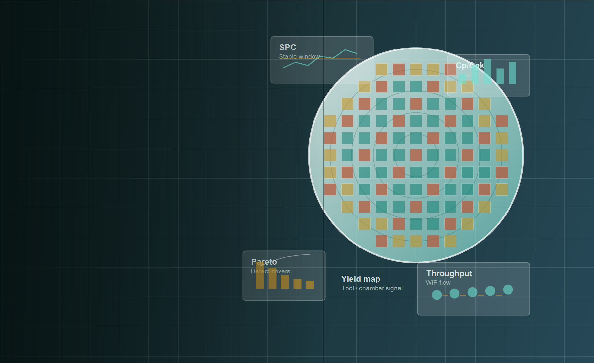
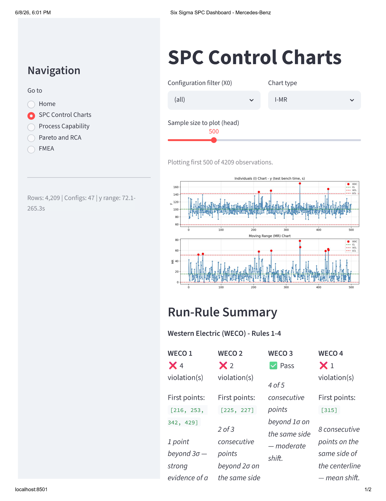
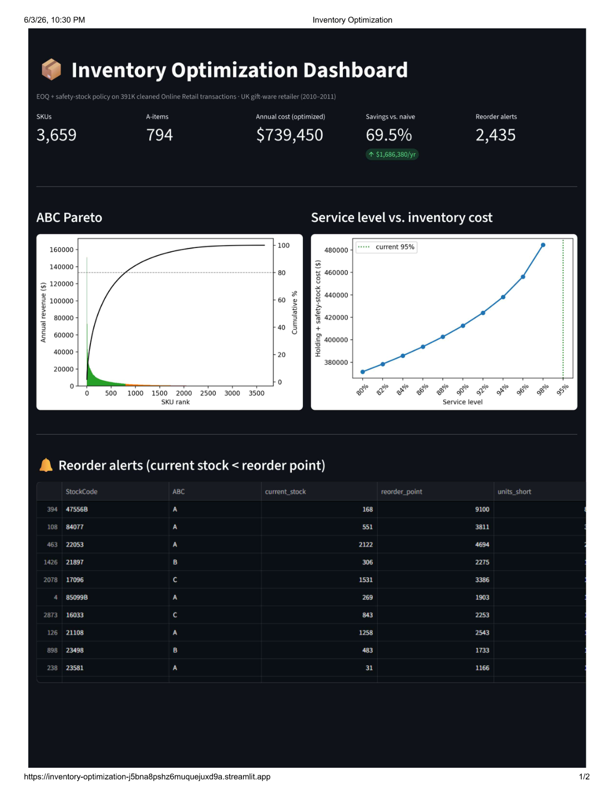
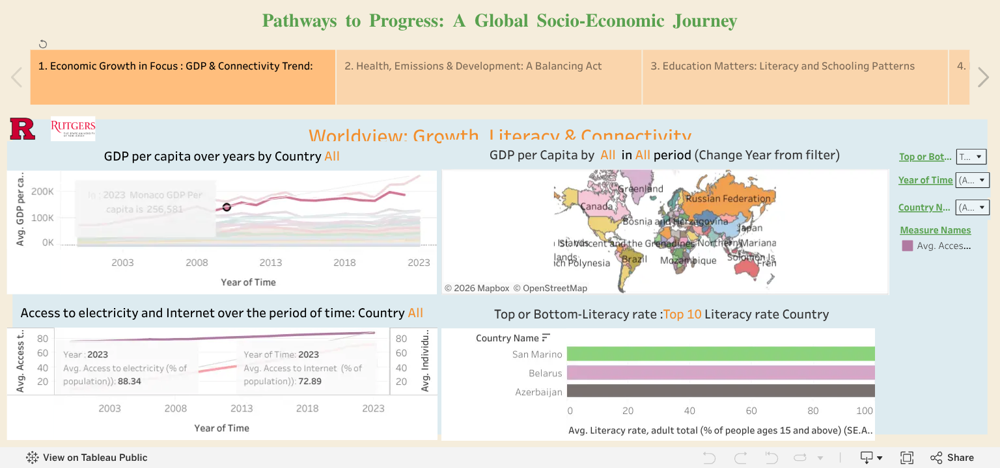

Semiconductor / Machine learning
Semiconductor Defect Analysis
A machine learning workflow and interactive dashboard for classifying wafer defects from process and inspection data.

Process quality · Manufacturing systems · Semiconductor
Industrial & Systems Engineering
I use process analysis, statistics, and production data to build more reliable manufacturing and operations systems. My focus is process quality, continuous improvement, and semiconductor manufacturing.
Rutgers University · Industrial & Systems Engineering
Selected work
Project case studies, working dashboards, and the code behind the analysis.
Semiconductor / Machine learning
A machine learning workflow and interactive dashboard for classifying wafer defects from process and inspection data.

Quality / Statistical process control
A manufacturing test-bench analysis that brings control charts, capability, Pareto analysis, and FMEA into one dashboard.

Operations / Inventory systems
An EOQ and safety-stock model that translates retail transactions into SKU-level ordering policies and service-level tradeoffs.

Analytics / Data visualization
An interactive Tableau story exploring economic growth, connectivity, health, education, and inequality across countries.
Planned studies · Results pending
Professional experience
My professional experience spans engineering consulting, manufacturing, publishing, and supply-chain operations.
Semiconductor / Lab experience
Nanofabrication facility training
Training at the Rutgers Nanofabrication CORE Facility connects my manufacturing interests with semiconductor processes. My project work explores the quality, variation, and data questions that matter in that environment.
Connecting process measurements to defects and yield.
Building a statistical view of stability and capability.
Investigating capacity, queueing, and WIP behavior.
Methods & tools
Get in touch
For opportunities in industrial, manufacturing, process, quality, and semiconductor engineering.
Email me